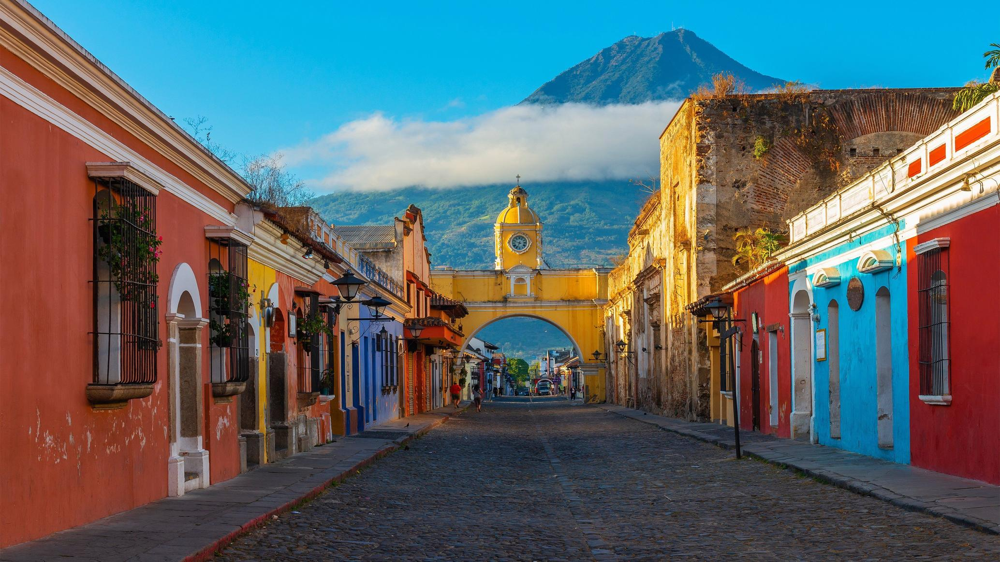
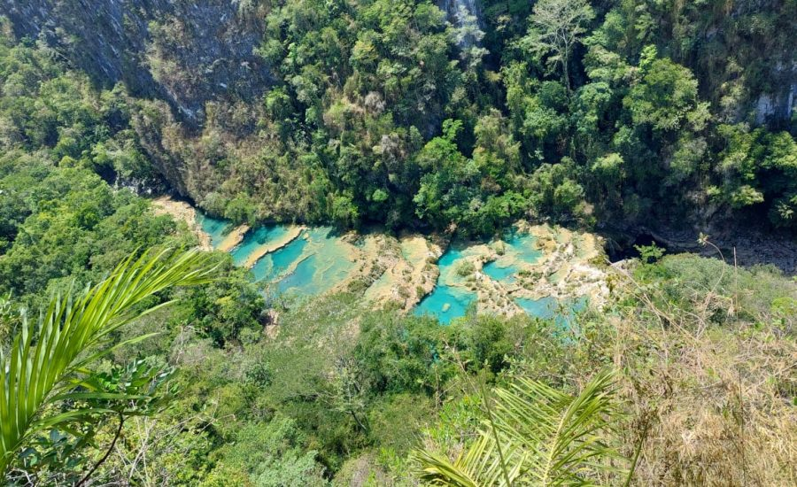
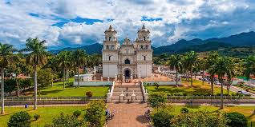
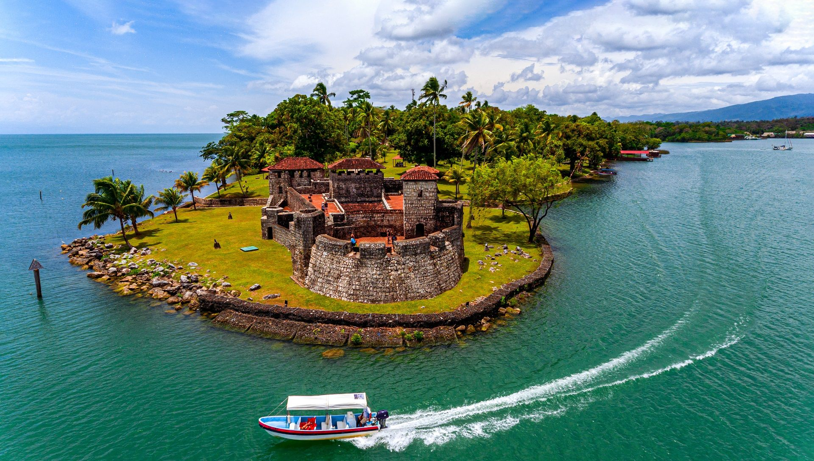

Lugares turisticos

Tikal
Caminar entre las majestuosas ruinas de Tikal es sentir la fuerza de una cultura milenaria que sigue viva.

Antigua Guatemala
Antigua: Donde el tiempo se detiene y la magia colonial comienza.
Lago de amatitlan Guatemala
El Atitlán tiene algo que te atrapa y te cierra la boca para que te centres sólo en él.

Semuc Champey
La octava maravilla del mundo.

Esquipulas Guatemala
He venido de tierras lejanas a adorar al Señor de Esquipulas, mi esperanza y mi fe.

Castillo san Felipe
Una fortaleza para amar.